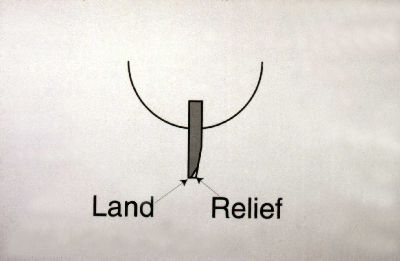

|
|
||
|
|
|
|
|
|
||
|
|
Cutting Grass or Manicuring Turf?
How you answer this question may determine what kind of mower you need and how it’s maintained.
Cutting grass, best described, as simply reducing the height of the grass, is not sophisticated at all. The first methods man used to cut grass (or forages) was with a scythe. One the first mechanical means of cutting grass was a power driven rotating scythe.
The kind of equipment used today to cut grass would include rotary, flail and cylinder mowers (we call reel mowers).
The common link to a rotating sythe and these three grass cutters are the two elements required by each in order to cut grass, the first being the speed of the blade (tip speed) and the second, a sharp cutting edge. The quality of cut is directly related to how fast the blades turn and how sharp they are.
To re-sharpen a rotary or flail blade is the easiest to accomplish of the three. A bench grinder or hand held side grinder or even a flat file would accomplish the task. Re-sharpening a cylinder mower requires more specialized equipment.
Rotary mowers are available in a variety of cutting widths. The length of the blade of course determines the width of cut. The blade is mounted on the end a spindle. The spindle will be turned most commonly by a belt or direct from a hydraulic motor. The spindle is mounted on a frame or deck. The deck can consist of one or more spindles which will also determine the overall width of cut. Other features of the deck will include shields, guards and baffling. The shields and guards primary purpose is to protect the operator from moving parts. The function of the baffle is to direct the flow of air, thus the flow of the clippings. The perimeter shield of the deck can be configured to have an opening on either side for a “side discharge”, or the openings will be in the rear section of the deck for “rear discharge”. Another popular arrangement is a closed deck that holds the clippings inside the baffles so they are reduced or pulverized until they are small enough to be deposited in the grass. The blades will be specific in length and in some cases will have one corner on the trailing end turned up. This design produces an uplift of air. The upward airflow creates a vacuum effect and will cause the grass blades to be in a more vertical position for a more effective cut. The airflow generated by the blades will also aid in discharging the clippings.
Most rotary blades can be re-sharpened. Re-sharpening methods range from files to hand held or bench grinders to specialized equipment. It’s important to take care when re-sharpening to insure a balanced blade. Special tools are also available to determine if a blade is balanced before reinstalling and putting it back in service.
Flail mowers also come in a variety of cutting widths. A flail mower consists of a drum approximately 12" in diameter with a shaft down the center. The drum is mounted horizontally inside a frame and is held in bearings through the shaft on each end. The drum is turned by belt, chain or by a hydraulic motor. The cutting blades are fastened to the outer perimeter of the drum with flexible links similar to a link of chain. The flexible link allows the blade to sling out of the way of objects, i.e. rocks, stones and roots. The blades are mounted in rows around the drum and can consist of several per foot. The greater the number and the spacing produces a finer cut over a coarser cut by fewer blades.
Flail mowers are often preferred over rotaries when used near and around pedestrians. The vertical rotation of the blades, the airflow and baffling directs the discharge downward and greatly reduces flinging debris in the open areas. The disadvantage of a flail is its ability to effectively cut tall grass. Normally a flail can only remove 2-3 inches of growth in one pass.
Flail blades can be re-sharpened. Re-sharpening methods range from files to hand held or bench grinders. Balancing is not critical when re-sharpening a flail blade but taking care that all are sharpened to the same length is important to insure a level cut.
The cylinder mower made its debut in England and is still used extensively to cut grass. More common uses, especially in Europe, are mowing along roadsides, parks, golf course roughs and open areas. By matter of choice and sometimes law, the cylinder mower is preferred because it is less hazardous from flinging rocks and debris in pedestrian areas.
The invention of the tabletop spin grinder made it possible to re-sharpen the cylinder mower blades with less difficulty. The cylinder unit was simply elevated with a grinding wheel underneath. The cylinder could be turned in reverse by hand or mechanical means, while at the same time a grinding stone traveled back and forth along the spinning cylinder, thus producing a sharp cutting edge on the blades. This method just as with sharpening rotary and flail blades is simply done as often as needed to keep a sharp cutting edge.
Manicuring Turf describes the action of clipping a small part of the grass blades in conditions where the grass is maintained at less than 2” in height. In some cases, on tournament condition greens, less than .005 of an inch of the grass blade is removed per mowing.
To-date, the only method used to manicure turf is a reel mower where the reel in conjunction with a bedknife together creates a shearing action, an action that duplicates that of a pair of scissors. these instruments of agronomy are precise in nature.
That is, the reel must be maintained extremely close to the bedknife in order to produce an effective cut. Unlike the action described earlier for cutting grass, the element of tip speed is not required to gain a quality of cut.
The two essential elements now are sharp blades and a relationship between the reel blade and bedknife.
Tip speed is only required for frequency of clip not quality of cut. Just like a pair of scissors, the reel blades should be acting with the bedknife with very little or preferably zero clearance between the two. Once the reel blades and bedknives are set properly, friction is developed.
To reduce friction, another step in reel sharpening must be accomplished. Relief grinding is removing the back part of the reel blades thus leaving a very thin “land“ area. This method of reel grinding “for manicuring turf” is recommended and preferred by all reel mower manufacturers. The benefits of relief grinding which includes less bedknife wear, less power requirements, higher quality of cut over a sustained period, also includes the ability to backlap a reel unit periodically to help insure and maintain the highest quality of cut. Another benefit of relief grinding is a dramatic reduction of drag. Drag that is developed as the grass is cut and moved between the reel and bedknife to be discharged in a catcher or back to the ground.
 (NOTE: Backlapping mid-season, when done properly and timely, should only take 3-5 minutes.) Keeping reels adjusted to the bedknife is the most challenging task required of a technician.
As facilities strive to provide their memberships and customers with the ultimate in manicured turf, the responsibility will rest with the technician to properly, accurately and precisely maintain the equipment that is used to “manicure” turf.
Recommended Procedures for Maintaining a Reel Mower used to Manicure Turf
Sharpening/Grinding: 1) Spin grind the reels to produce a sharp edge; 2) Single blade relief grind to remove excess blade width; and 3) Grind top face and surface front edge of the bedknife following original equipment manufacturer’s specifications on angles and land width. This process should be done during the non-mowing season or at least once a year and no more than twice a year. Mid season grinding that only involves spin grinding the reel should be avoided. For reasons described below.
Adjustments: Reels and bedknives should be adjusted and maintained to cut one sheet of newspaper as cleanly as a pair of scissors. A properly sharpened reel and bedknife will become perfectly matched to each other once they are put into service. This takes only a matter of minutes as the unit cuts grass. It is important to maintain that relationship throughout the season. The two critical steps of assuring the two remain perfectly matched are adjusting and backlapping. Keep in mind, as soon as space develops between the reel and bedknife, they both begin to get dull. A misconception is that a reel mower is a self-sharpening instrument - it is not. Once it gets dull, it will not sharpen itself, but if properly adjusted, it will never get dull!
Rule of thumb - backlap before the reels need it. A regular and routine procedure should be incorporated as part of preventative maintenance. When done timely and properly, backlapping should only take 3-5 minutes. Much longer than this would indicate one or more of the following:
1) Waited too long between backlapping, that is the blades became extremely dull, almost to the point of having to be reground.
2) “Relief Angle” is worn out. In addition to the benefits of grinding a relief angle as described earlier, it also greatly aids in the backlapping process. The slope produced to the backside of the reel blade actually traps the compound as the reel rotates in reverse, thus causing the compound to be forced between the reel and bedknife. With out this slope, the full thickness of the reel blade will have a tendency to wipe the compound off, thus rendering it useless.
3) Reel is in wrong position during lapping process. The reels should be in the mowing position with the rear roller elevated 2 inches.
In this position, the excess compound drops onto the bedknife and migrates to the “groove” behind the lip of the bedknife. This groove or trough is incorporated expressly for the purpose of trapping and holding lapping compound. Also, the weight of the reel through gravity will aid in the backlapping process.
4) Poor quality lapping, compound. Some compounds are better and more consistent than others are. Also make sure the right size grit is used relative to the thickness of the reel being backlapped.
Other maintenance details. It is essential that the bedknife be surfaced after it has been fastened to the bedbar. The bedknife will conform to the shape of the bedbar, which are not always perfectly straight. Therefore surfacing the top face and front edge is important. Grinding the top face – The top face should be ground at an angle recommended by the OEM. These specs will be found in the service manual of the respective mower. Grinding the front edge- it is absolutely essential that the front edge be not only perfectly straight, at the proper angle and also in perfect alignment with the axis of the reel. To insure straightness, touch off each end of the bedknife and run the grinder across until a very small “bur” is present along the entire length of the bedknife. Grinder should be set to grind an angle recommended by the OEM. These specs will be found in the service manual of the respective mower. A bedknife with a “frown” will cut on each end and not along the center. A bedknife with a “smile” will cut along the center and not toward the ends. A reel unit where the front edge of the bedknife is not in perfect alignment with the axis of the reel, will cut along the center of the reel and not on the ends. Be careful when grinding the front edge of the bedknife that misalignment is not occurring. Important Note – Care must be given not to grind too much away from the front edge of the bedknife. Removing too much material will have adverse affects on the attitude of the cutting unit. The front edge of the bedknife will be located behind the lowest arc of the reel. The results of this will cause a “streaking” appearance to the turf. These steaks occur during the “overlap” and are a result of discoloration from damaged turf blade tips. Because the lowest arc of the reel is actually below the top of the bedknife, as the reel passes over turf that has already been cut, it is just hitting the top tip of the turf blades. This action bruises the turf which will turn the tips gray. Thus producing the “light” streaks on the turf surface.
Techniques used at one facility may or may not work at other places. Just because someone may adjust or backlap once a week doesn’t mean that everyone can. Some conditions require daily adjusting and more regular backlapping.
Other Factors to Consider: 1) How much daily use in hours is the reel mower being used 2) How many cutting units for the area maintained are being used 3) Type of grass being maintained 4) Cutting height 5) What’s the top dressing practice 6) What’s the coring or aerification practice 7) What’s the verti-cutting practice 8) Are groomers being used
All these factors must be determined before the proper preventative and normal maintenance program of a reel mower can be developed. Conclusion: When it comes to manicuring turf, there are few short cuts. There are ways however to make the job easier. A properly maintained reel unit, beginning with the proper re-grinding the reel and bedknife to original equipment manufacturers recommendations, timely reel to bedknife adjustments and routine back lapping will help insure consistent performance and maintain the highest quality of cut throughout the season. Don Cotton, Certified Turfgrass Professional Vice-President and General Manager, Locke Turf, Inc. |
|
||||||||||||||||||||||||||||||||||||||||||||||
|
|
|
|
|
|